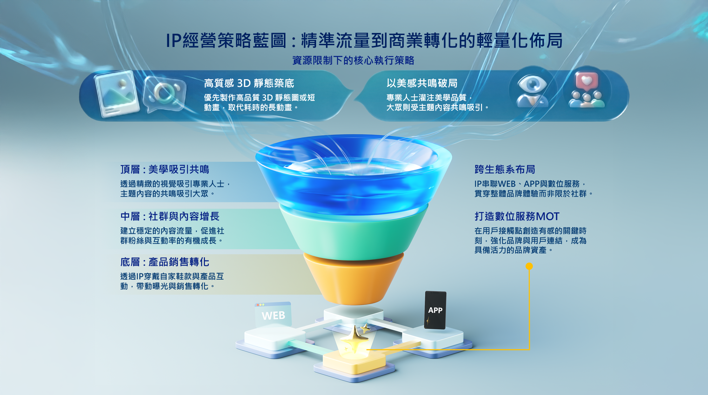
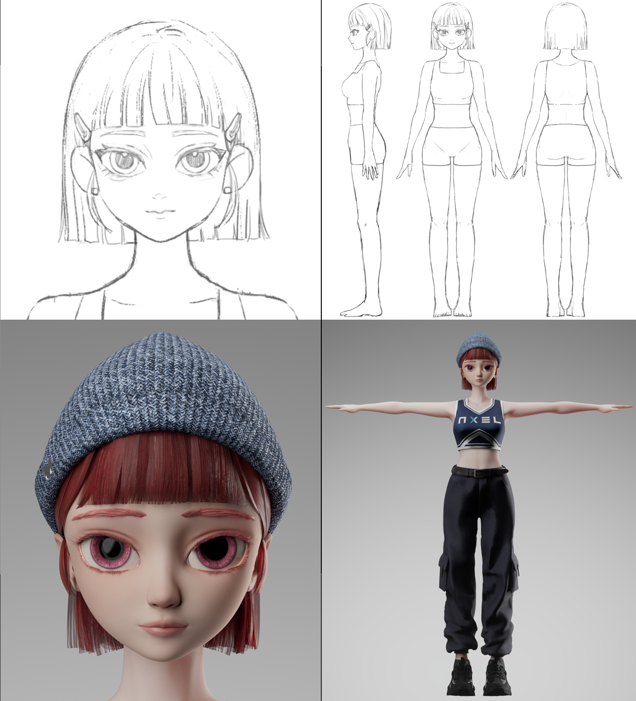
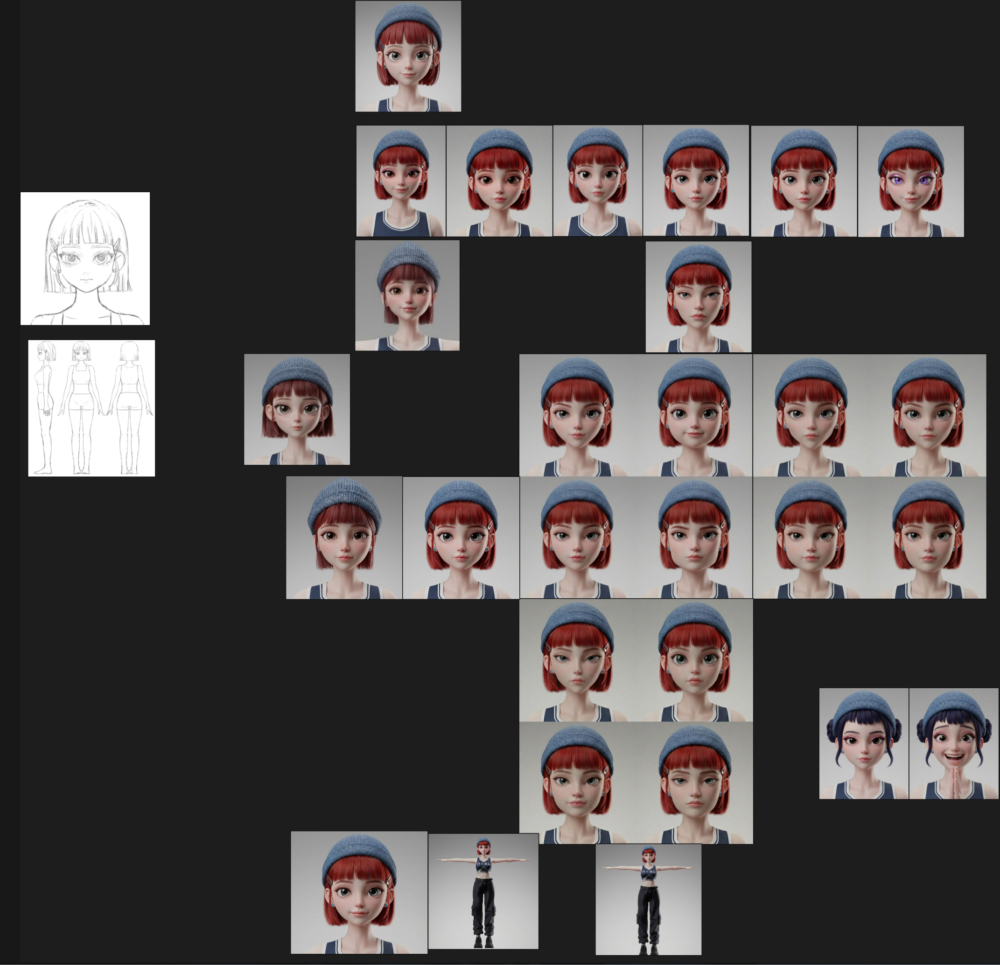
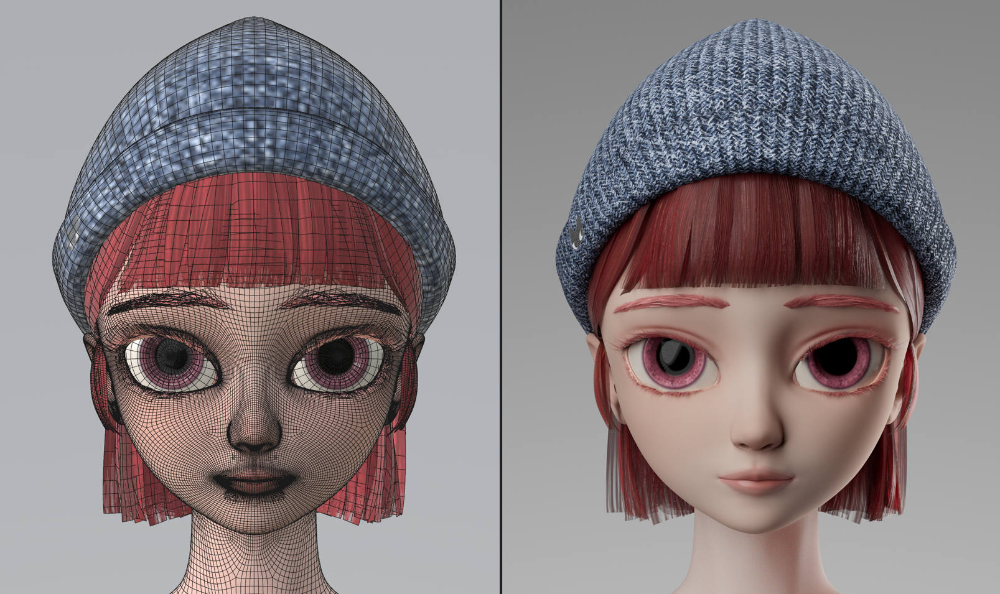
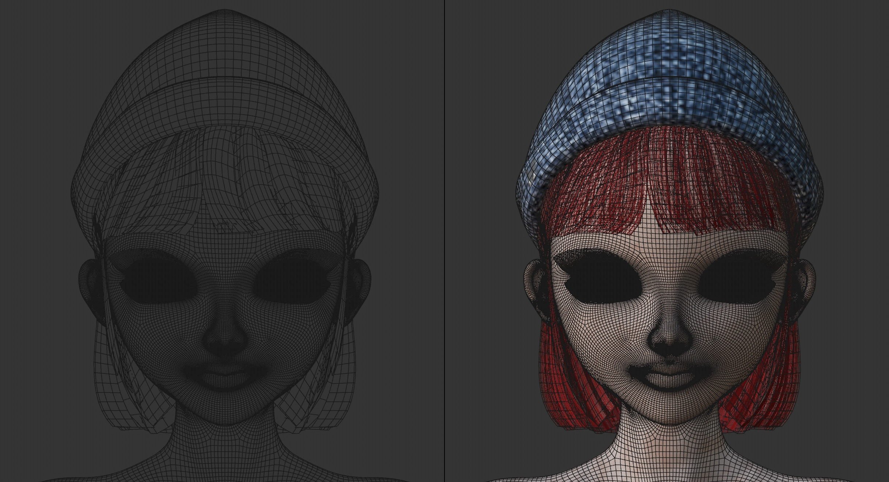
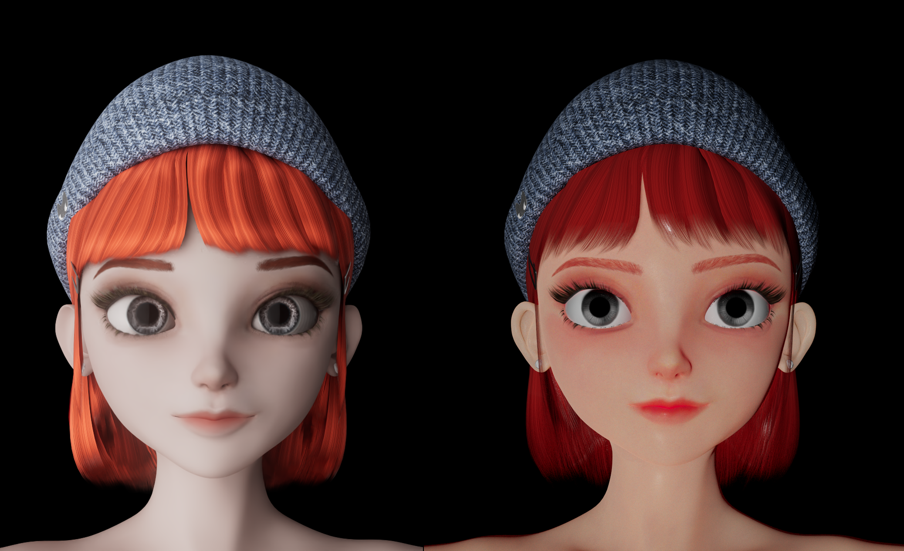
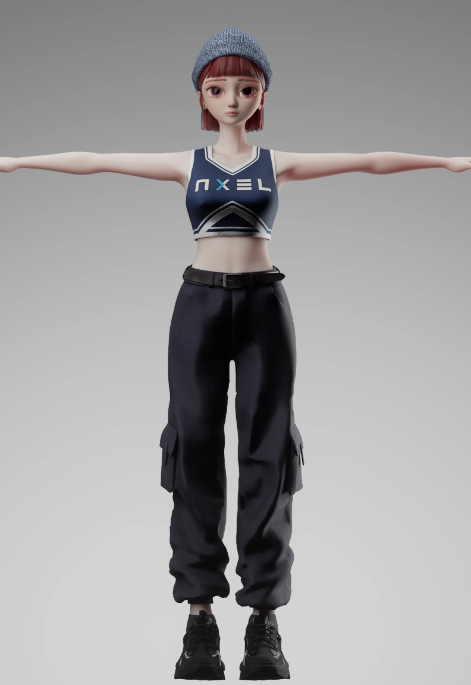
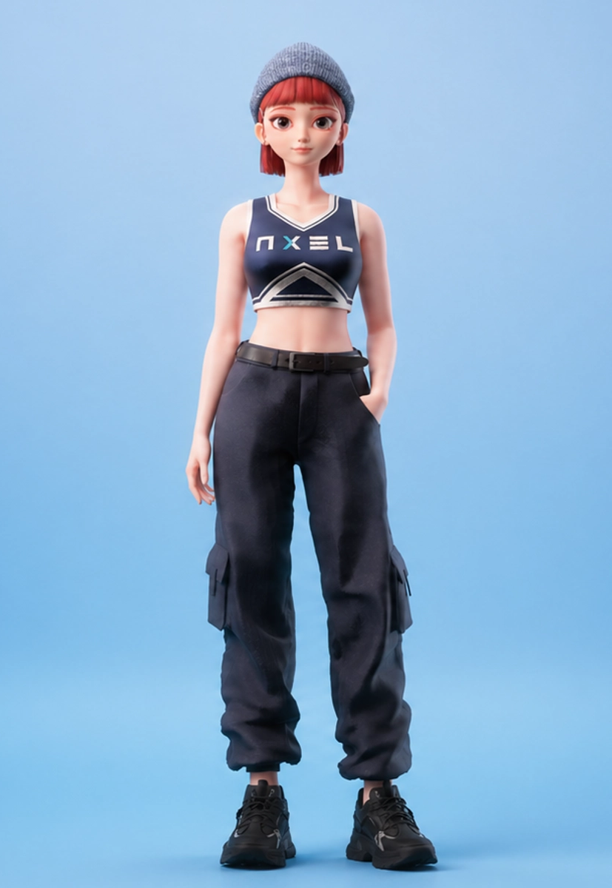
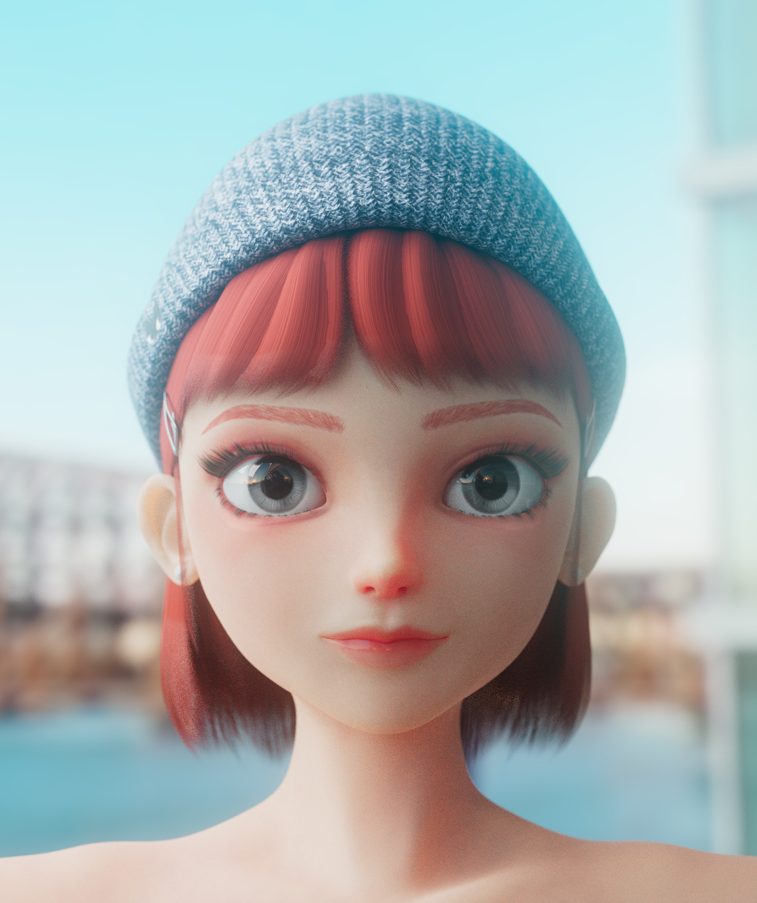

The Vision
The goal was to transform an internal character concept into a lightweight but commercially adaptable brand IP asset, connecting visual direction, production workflow, and future content applications.

3D Character / AI Workflow
A corporate IP character revamp project combining art direction, 3D character LookDev, and AI-assisted workflow exploration to modernize an existing brand character into a more market-ready visual asset.
The original 3D character model, which no longer matched modern market aesthetics, was redesigned into a brand IP asset with stronger contemporary appeal and higher potential for social media communication.
ComfyUI was introduced into the traditional 3D workflow to shorten early-stage style testing costs, build shared visual references for the team, and produce IP 3D motion assets, significantly reducing production costs.
A process-based breakdown of the character revamp workflow, from IP strategy and visual direction to AI-assisted exploration, 3D asset refinement, and final character presentation.

The goal was to transform an internal character concept into a lightweight but commercially adaptable brand IP asset, connecting visual direction, production workflow, and future content applications.

The early cross-functional workflow created a visual gap between 2D character concepts and 3D production output. The model details and material quality did not yet meet the commercial visual standard expected for a brand IP asset.

AI was introduced to accelerate early-stage style validation. Based on the original 2D sketches, multiple 3D IP character prototypes were generated for team A/B testing, reducing trial-and-error costs and helping the team quickly align on the visual direction.

The original character asset was reviewed through both raw mesh and rendered views, revealing limitations in facial structure, surface detail, material quality, and overall commercial appeal.

The facial topology was reorganized to improve mesh flow, facial structure, and future production usability, creating a cleaner foundation for material refinement and final rendering.

Following the AI-validated direction, the character structure and proportions were refined, while PBR texture maps were repainted to improve skin translucency, makeup details, and hair material quality.



The character's final appearance was refined through topology correction, proportion adjustment, material repainting, and lighting reconstruction, bringing the asset closer to the commercial standard expected for a brand IP.

The final character key visual presents the refreshed IP with a cleaner facial appeal, softer material quality, and a more contemporary visual style suitable for brand communication, social content, and future motion applications.
AI-assisted animation was used to create lightweight motion prototypes, reducing the trial-and-error cost of traditional 3D animation and demonstrating the commercial potential of the IP strategy blueprint.
Product Visualization / 3D Animation
→